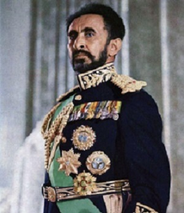

Haile Selassie

King Haile Selassie ~1892 - 1975~
Haile Selassie I was an Emperor of Ethiopia from 1930 to 1974, and he had been Regent Plenipotentiary of Ethiopia from 1916. He is a defining figure in modern Ethiopian history.
Among the Rastafari movement, whose followers are estimated to number between 700,000 and one million, Haile Selassie is revered as the returned messiah of the Bible, God incarnate.
Beginning in Jamaica in the 1930s, the Rastafari movement perceives Haile Selassie as a messianic figure who will lead a future golden age of eternal peace, righteousness, and prosperity. He was an Ethiopian Orthodox Christian throughout his life.
Facts about King Haile Selassie
- He was born July 23, 1892, near Harer, Ethiopia
- Original name was Lij Tafari Makonnen
- He was the Emperor of Ethiopia from 1930 to 1974
- Upon his ascension, he took as his regnal name Haile Selassie I. Haile means in Ge'ez "Power of" and Selassie means trinity—therefore Haile Selassie roughly translates to "Power of the Trinity".
- As emperor of Ethiopia (1930–74), Haile Selassie I was known for modernizing his country, for helping to establish the Organization of African Unity (now the African Union) in 1963, for his exile (1936–41), and for being overthrown in 1974. He was also regarded as the messiah of the African race by many Rastas.
- Haile Selassie I is regarded by Rastafarians as the God of the Black race. This is supported by the Rastafarian idea that God himself is black, a claim backed by this Biblical text: For the hurt of the daughter of my people am I hurt; I am black; as astonishment hath taken hold of me.
- Rastas also view Haile Selassie as a symbol of their positive affirmation of Africa as a source of spiritual and cultural heritage. During the 1960s, many Jamaican Rastas professed the belief that Haile Selassie would never die.
- From 1270 to 1974, Ethiopia was ruled by a family claiming (with no documentation) to be descendants of the Biblical King Solomon and the Queen of Sheba, making them relatives of Jesus Christ. ... Haile Selassie was a descendant of this alleged line through his paternal grandmother, Tenagnework Sahle Selassie.
- Many Rastafarians trace Haile Selassie's lineage back to King Solomon and the Queen of Sheba. They believe that the Queen of Sheba's visit to King Solomon found in the Book of Kings (1 Kings 10:1-13) provides further proof of the divinity of Haile Selassie I.
- Haile Selassie was murdered on August 27, 1975 by Lieutenant Colonel Daniel Asfaw, upon the direct command of the executive committee of the Derg, which constitutes 17 people, including Mengistu Hailemariam, Teferi Banti, and 15 others.
For more detailes about King Haile Selassie I please follow this Britannica article.